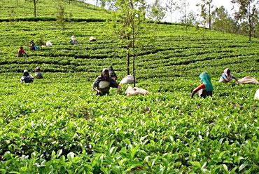

Kolukkumalai Tea Estate
At about 7,130 ft (2,170 m) above sea level, Kolukkumalai Tea Estate is the highest tea estate in the world.Kolukkumalai tea plantation Munnar is known for its tea leaves, the aroma of which is distinct from the others around. The leaves are handpicked, processed, and manually packed for distribution. And the colonial-era factory still uses the age-old methods of tea processing.
Apart from tasting tea, tourists visit this place for the mesmerising views it offers. Here, you can take the safari across the tea estate, trek down the hills and get a guided tour of the factory.

Rating:
4.5/5 stars
Entry Fee:
100 per person for Adults
Address:
Engineering College Road,Near Murugan Temple, Nullatanni, Kochi, Kerala, 685612, India
Timings:
Monday to Saturday 7:00 am – 6:00 pm
Sunday Closed / Holiday
Getting there:
Kolukkumalai is about 38 km from Munnar. The hill top is accessible only by jeep and it is about one and a half hour journey from the Munnar town.